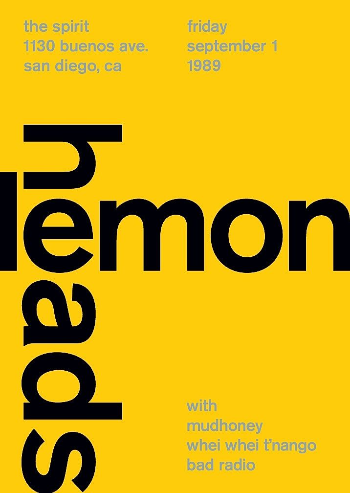

Proposition de projet
Description du projet
Pour ce projet de site internet, nous désirons explorer le web design et plus précisément des animations stylistiques avec de la typographie. Nous voulons utiliser le design typographique suisse et nous concentrersur l'animation de typographies. Le sujet du site portera lui-même sur le design typographique suisse. Les effets sur l'écriture apparaîtont lorsque l'on fera défiler les pages. Nous désirons également créer un effet de parallaxe avec les textes et images que nous voulons présenter. Nous visons un résultat élégant avec certains éléments visuels travaillés dans le but de révéler du texte.
Maquette
Quelques images qui nous ont inspirés. Voici trois idées de design que nous aimerions travailler pour le site. Nous allons animer les textes et et les symboles comme les flèches par exemple.


Techniques utilisées
Nous allons explorer la technique du parallaxe pour le défilement du contenu du site. Nous voudrions nous inspirer de Jefferson Hack qui fait cet effet à merveille. Nous aimerions également explorer l'effet d'un texte qui défile et jouer sur son format plein et son format tracé. Exemple :